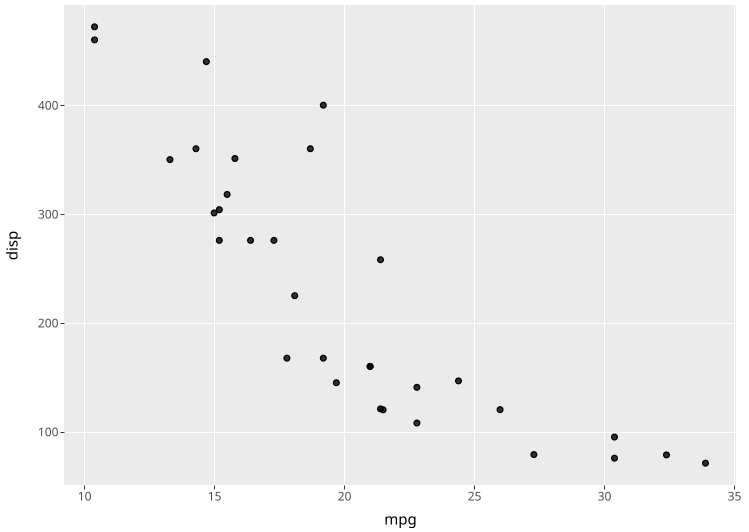
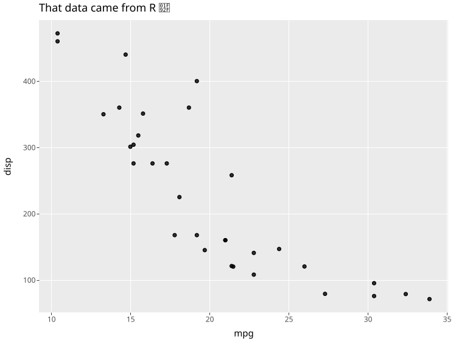

The ggsql R package provides rust bindings to the ggsql visualization tool so that you can hook up readers and writers to it, execute queries, and visualize the result. It also contain a knitr engine for supporting ggsql blocks, with facilities for bidirectional data flow between R, Python, and ggsql blocks. This means that you can prepare some data in one block using dplyr or pandas, and then visualize it with ggsql in a different block without having to do anything to pass the data around.
Installation
You can install the development version of ggsql from GitHub with:
# install.packages("pak")
pak::pak("posit-dev/ggsql")Example
While one of the core appeals of the ggsql R package is the knitr engine it provides, you can also use it directly in R to execute visual queries:
library(ggsql)
# Create an in-memory DuckDB reader
reader <- duckdb_reader()
# Register a dataset in it
ggsql_register(reader, mtcars, "amazing_data")
# Visualize it with a query
ggsql_execute(reader, "
VISUALIZE mpg AS x, disp AS y FROM amazing_data
DRAW point
")
We could achieve the same in a ggsql code block by referencing an R dataset directly using the r: prefix
VISUALIZE mpg AS x, disp AS y FROM r:mtcars
DRAW point
LABEL
title => 'That data came from R 🤯'
The only thing you need to remember is to load ggsql into R in your Rmarkdown/Quarto document so the knitr engine is registered.